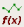

To access: Click Parametric Plot or the process window plot thumbnail in the Result tab.
The Parametric Plot shows the results of source explorations when the Parametric Explorer session mode is used.
The Parametric Plot displays results in a graph and table. The graph displays common depth of focus for the source explorations. The table displays the settings and results for each source exploration. The results can be filtered in the table and displayed in the graph.
Using the data filtering controls, the Parametric Explorer results can be filtered and displayed in the graph.
Object |
Description |
|---|---|
Sets the results displayed in the graph. Source Index displays all sources and Table Index displays only sources filtered by the table controls. Default is Source Index display. |
|
Fixes the sorting order for a column. When enabled for one column, a second column can be filtered and retains the order of the fixed column. |
|
Toggles the data filter mode. The available data filter modes are no filter, =, >, >=, <, and <=. Clicking the icon toggles the filter mode. Default mode is no filter. |
|
Updates the graph using updated settings in the table. For example, if the sorting order is changed, Re-Plot updates the graph with the new order. |
Using the parametric plot tools, the Parametric Explorer results can be analyzed, scored, and saved.
Object |
Description |
|---|---|
Opens the Custom Parametric Plot tool. |
|
|  | Opens the Score Editor. Results are displayed in the Score column of the table. |
When custom sources are explored, the table reports each custom source with the Source Type value reported as “custom”. When numerical apertures are explored, the table displays an additional column to report the NA value.